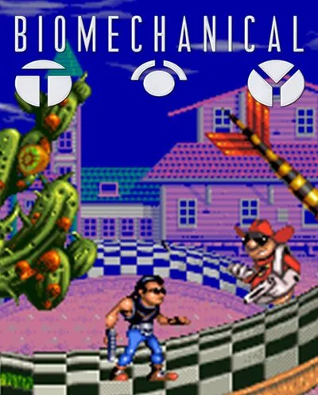
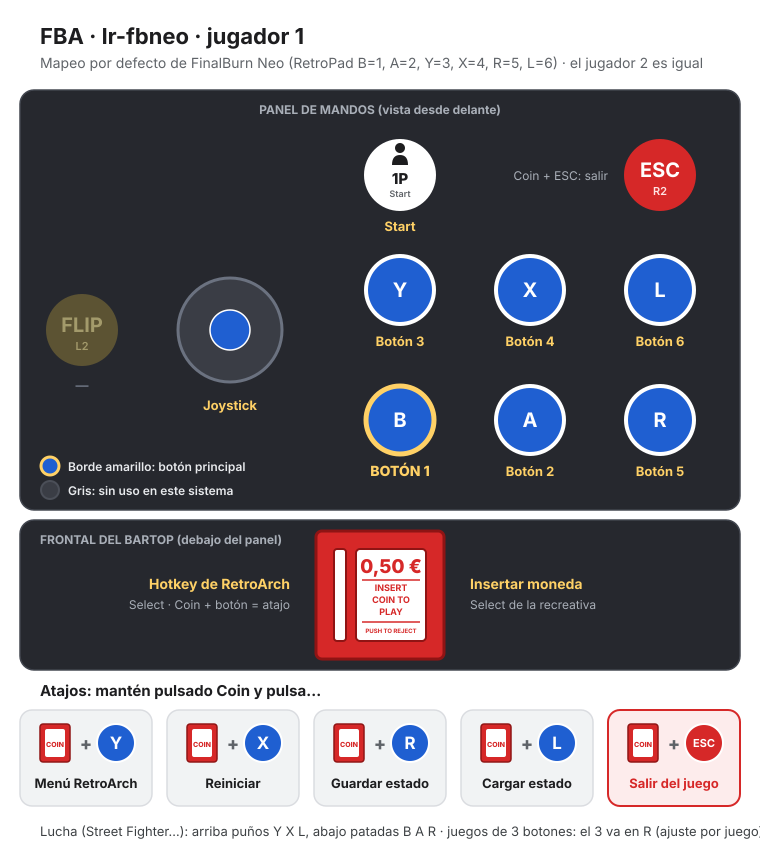

FBA (FinalBurn Alpha)
Biomechanical Toy
- Año: 1995
- Desarrollador: Gaelco
- Género: Plataformas / Disparos con desplazamiento
- Jugadores: 2 jugadores
- Probando
- A dos: por turnos
Plataformas y disparos de la española Gaelco: el héroe Inguz recorre un mundo de juguetes animados para recuperar el Péndulo Mágico que robó el malvado Scrubby. Hay que vigilar la munición: al recargar, Inguz queda expuesto.
Controles
a dos por turnos: meter dos monedas y empezar con 2P (con 1P la partida es de un solo jugador y acaba en game over). Cuando el J1 pierda una vida o la partida, que el J2 juegue con sus mandos.
Probado en la bartop (2026-11-21): bien. Solo ha podido jugar el J1. Dos botones. Dos jugadores por turnos, según las fuentes (no a la vez): el J2 juega cuando le toca.
| Panel | Juego |
|---|---|
 | Disparar hacia donde apunte el joystick (en cualquier dirección menos hacia abajo) |
 | Saltar |
  | Empezar |
 | Meter una moneda |
+  | Salir del juego |
El panel en FBA (FinalBurn Alpha)


Otras dudas de la guía (1)
Datos que las fuentes no aclaran y que cuesta ver jugando (historia, finales, fases, objetos o trucos): no hace falta buscarlos.
- Mejor final: el longplay de «Vídeos» termina con el «mejor final». ⚠️ Las fuentes no explican cómo se consigue.
Argumento
Un criminal llamado Scrubby se ha escapado. Estaba encerrado por intentar robar el Péndulo Mágico, que da vida a los juguetes y que vigila Relik, un reloj de cuco.
Scrubby aparece de repente y se lleva el péndulo. Llaman a un héroe, Inguz, para recuperarlo antes de que desaparezca el mundo mágico de los juguetes.
Fuentes
Jugabilidad
- Tipo de juego: run and gun de desplazamiento lateral de la española Gaelco (1995).
- Mecánica: Inguz recorre el país de los juguetes (con desplazamiento en ocho direcciones) disparando a juguetes malvados, recogiendo potenciadores y venciendo a un jefe al final de cada fase. Por el camino libera a los pocos juguetes buenos que quedan atrapados; los liberados le dan más potencia de fuego durante un rato.
- La pistola y los cargadores: empieza con disparo simple. Al vaciarse el cargador, Inguz tarda un momento en recargar y queda expuesto.
- Vida: cada fase y cada vida empiezan con la barra llena (80 unidades); la comida la recupera. Se pierde una vida al quedarse sin salud, al caer por abajo de la pantalla o a un peligro (como un pozo de lava) y al acabarse el tiempo.
- Al acabar cada fase, puntos extra según el tiempo y la salud que queden.
- Puntos de control: banderas rojas; al perder una vida se sigue desde la última.
- Estructura: 6 fases, con una fase bonus antes de la última (detalle en «Guía de niveles»).
Fuentes
Guía de niveles
| Fase | Escenario y jefe |
|---|---|
| Fase 1 | Crazy West · The Wizard Queen |
| Fase 2 | Chess Valley · The Flying King |
| Fase 3 | Train to Hell · The Virus |
| Fase 4 | Wood of Clocks · The Alien |
| Fase 5 | Dragon's Tower · The Green Dragon |
| Bonus | Flying Pigs Matanza |
| Fase 6 | Wild Land · Scrubby (jefe final) |
Objetos
| Objeto | Qué hace |
|---|---|
| Cargadores especiales | Mejoran la pistola: más potencia, disparo automático o balas explosivas |
| Comida | Recupera salud |
| Bomba inteligente | Al tocarla, daña o destruye a todos los juguetes enemigos de la pantalla |
| Juguete bueno liberado | Más potencia de fuego durante un rato |
| Cosas con la cara de Inguz (cofres de madera, globos) | Sueltan objetos de bonificación al dispararles |
| Cara oriental en una plataforma | Al dispararle suelta globos, que a su vez sueltan objetos |
| Sombrero volador gigante | Sale de vez en cuando; suelta objetos al dispararle |
Fuentes
Trucos y secretos
Lo marcado con ⚠️ no está probado en la bartop.
Secretos
- Mejor final: el longplay de «Vídeos» termina con el «mejor final». ⚠️ Las fuentes no explican cómo se consigue.
- Fase bonus: «Flying Pigs Matanza», antes de la última fase.
Longplay

Partida completa de la recreativa (25 min), de VICIOGAME Retro Games: 🎮 Biomechanical Toy (Arcade) Complete Gameplay.
Pulsa el minuto de un nivel para ver el vídeo desde ese punto.
Niveles
| Parte | Fases |
|---|---|
| Fases |